虽然因为种种原因，我已经有3年多没有磕大头了，但2015年那几个月的磕大头情形好像如昨日一般，仍然历历在目。
这几年来，群里有不少新人并不满足于Tai师在书中讲解的内容，还询问了很多个人亲身实践过程的细节和体会，因此，我就想把自己当初磕大头的一些体会写出来——这也算是抛砖引玉吧；同时，也寄期有更多人将自己的磕大头心得写出来，与大家一起共同分享。
考虑到每个人身体差异性还是比较大的，因此，我的分享并不适合所有人，可能只会与满足以下两点的男性修者产生共鸣。
1、我用的是Tai式磕大头，也就是五体投地；而不是磕小头，也不是网上视频介绍的那种手在垫子上滑行的磕大头(下文会谈到这点)。
2、我是还算年轻的修者，身体底子还可以，并不虚弱或者有病。Tai式磕大头偏刚劲威猛，所以，是身体虚弱的人，特别是身体不太好的女修，一开始这么磕，可能一下子适应不过来。
一、工具篇
工欲善其事，必先利其器。磕大头虽然简单，基本上不需要什么太高科技的东西，对场地的要求也不高，但还是需要准备以下物品：
1A、长方形垫子(如下图所示)。长方形垫子主要起着缓冲的作用，加少膝盖受到垫子反作用力。磕大头重要，科学的磕大头更重要。如何保护膝盖应该是每个磕大头修者最需要重点考虑的一件事，怎么保护都不过分。毕竟我们磕大头也不只是磕几千个就会完事的！一点点的伤害，如果乘以几万次，几十万次，这个累积量就很客观了。关于这点，Tai师在书中也是重点提到过的。
磕大头的垫子有很多选择，瑜伽垫就是大家经常用的。出于保护膝盖的目的，建议大家选择加厚版的瑜伽垫。大家可以去淘宝选择，下图就是加厚版的样子(20mm后)：
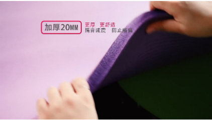
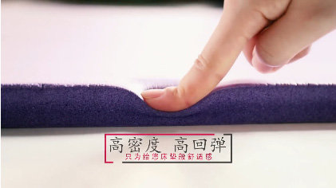
不过，当初我用的并不是瑜伽垫，而是白色长方形泡沫垫子——它足足有30mm厚(如下图所示)。直接跪下去，膝盖也不会痛。因为家里正好有这个，所以我就先凑合用着，并没有买瑜伽垫。令人惊喜的是，这种垫子比瑜伽垫厚多了，比加厚版的瑜伽垫还厚1/3(后期才发现的，最初并不知道可以用瑜伽垫)，其效果在后期也表现优异，感觉它超过了瑜伽垫。只不过它也有一个缺点，那就是网上买不到！一般在大学校园开学季，不少学长们向大学新生兜售床上用品，其中就有这种垫子——也很便宜，我就在前年又买了一个，当作备份。
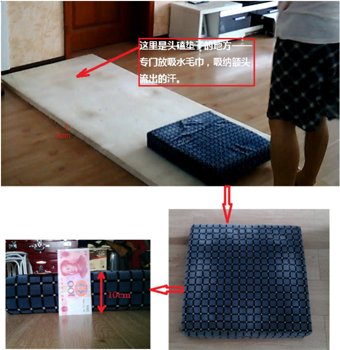
1B、灰蓝色正方形海绵垫子(如上图所示)。这个不是必须的，大家不一定需要准备这个。这个海绵垫子是我自己特意加上去的——为了更好的保护我的膝盖。我比较保守，对自己的膝盖很小心的！在磕大头与膝盖之间，如果一定要做个选择的话，我一定选择膝盖。这个正方形的海绵垫子是从家里老旧沙发上淘汰下来的旧货，足足有100mm厚，再加上白色长方形的泡沫垫子的厚度，在膝盖处的总厚度足足130mm！嘿嘿，保护的很过分吧！这么做也确实给我消弭了不少潜在的风险，这点从其他修者与我沟通过程中得到反馈。，那也是经过了6万多个大头的实践考验，这个组合(泡沫+海绵)保护膝盖的效果按东北话来说，那是杠杠的！
2、纯棉的吸汗毛巾(如上图红色箭头所示)。磕大头过程中会出很多汗，身体毒素越多，越胖的人，汗也越多。为了不影响磕大头的速度，最好在头接触垫子的位置放上一块纯棉的吸汗毛巾。
3、手机。手机主要是用来记录每次磕大头开始的时间和结束的时间。换用其他计时工具皆可，例如手表，秒表等等。
4、脂肪秤。用来测量体重和身体的脂肪率。
5、皮尺。用来测量腰围。
二、方法篇
1、磕大头的方法
我用的是Tai式磕大头，也就是五体投地，并严格按照Tai师的要求来磕。磕大头的详细方法，文字部分可以看《坐禅之问答录》中的相关章节；视频部分可以下载Tai群(QQ群号码：178818909)内的群文件中的两个视频(如下图两个箭头所示)。
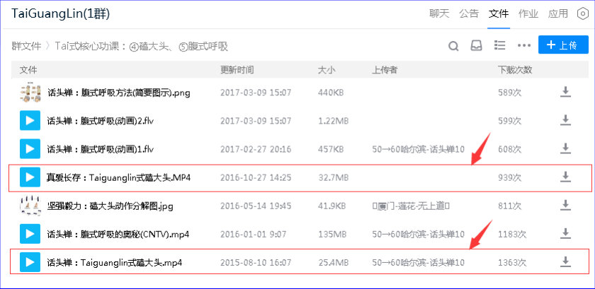
这里需要特别说明的是，Tai式磕大头与网上绝大部分磕大头视频有三点明显的不同：其一是屁股不能高于头；其二是手并不在垫子上滑行；其三，从垫子上起身直立身体主要是依靠速度惯性和腿部力量，而非用手(下图所示的就是网上典型的非Tai式磕大头)。因此，Tai式磕大头的磕头速度是很快的。
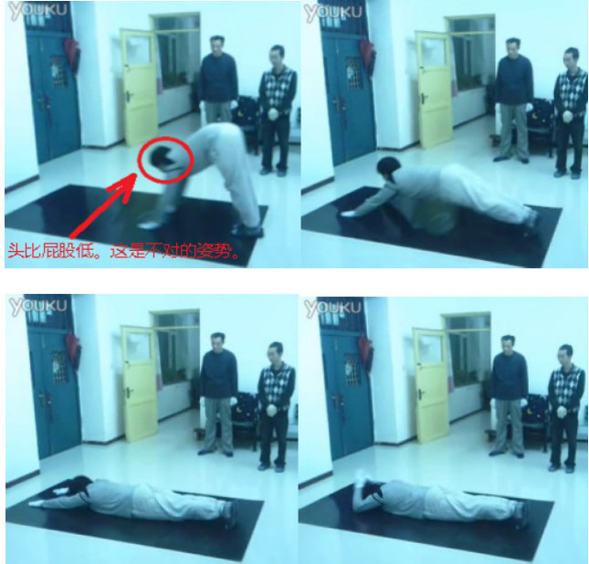
2、计数的方法
我磕大头采用计数，而非计时——这样更精确。Tai师在书中提到磕大头时，说的也一直说的是个数。具体如何计数，网上有很多种方法，例如指环式电子计数器、感应式计数器等——我选择的是用心来计数。
用心计数的好处是：磕大头过程中，你必须全神贯注。每次头碰毛巾，心里就计数一次；如果不一心一意，分心的话，那么计数就会出错。这点与念佛时的一心应该是相同的。
三、计划篇
谋定而后动，知止而有得。准备好磕大头工具，确定好磕大头方法后，接下来就需要制定行动计划了。我当初的目标是实践Tai式磕大头，看看其效果是否如Tai师说的那样好。因此，我当初制定的目标很简单，也很明确——达到每天500个(最终也完成了，并达到每天555个)。我的行动计划也就是围绕着每天500个的目标而制定(之所以定500个，是因为Tai师在书中这么建议的，我自然欣然采纳之)。当然，当年的那份行动计划不完全是为磕大头一门功课而制定的，但重点却是磕大头！
为了保证磕大头的效果以及防止磕大头偏离正确的轨道，经过慎重的分析和综合的考量，在这份行动计划里，我选取了一些指标来监控磕大头的整个过程。这些指标分别是：
①每日磕大头的数量(每天统计一次)、②每次磕大头所花费的时间(统计起止时间)(每天统计一次)
③磕大头累积总数
④腰围——用来测量腰围。爱美人士最喜欢测量的指标之一
⑤体重——用来测量腰围。爱美人士最喜欢测量的指标之一
⑥心率、⑦呼吸频率、⑧BMI指数、⑨总脂肪率、⑩汗的气味(不定期统计)
行动计划的这份表格，我称之为“每月修行计划”。这些指标都被收纳在“每月修行计划”当中。下图就是7月份的“每月修行计划”及其部分指标的截图(详见附录2)：
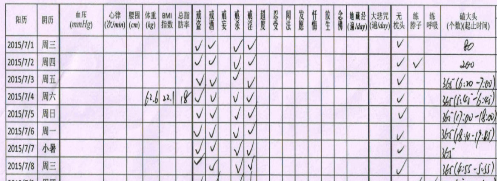
通过跟踪这些指标的每天(月)的变化，我能够判断当下磕大头的进展对我身体有着何种影响，进而动态而灵活的调整下一阶段的磕大头计划同时，也给予了我每天的信心和继续磕下去的动力，而不会因为迷茫而停顿下来。
四、行动篇
我最初磕大头是从2015年6月7日开始的。每个人具体磕多少个，则因人而异。这里有个大致的方法可供新人参考：如果今天磕某个数量的大头，第二天仍然有像以往没磕大头时那样精力，那么，第二天就可以增加10个。如果保守一点的话，那就一周加一次，每次加10个。
回到15年的那个时候，因为不知道自己身体每次能适应多个大头，所以，我尝试从50个开始，自己身体没有什么不良反应，第二天我就再增加了110个——呵呵，我属于比较激进的那种。如此，从6月7日开始，一直到6月30日，大致每天都比前一天增加10个，一直增加到每天320个。
这大约1个月，身体都能承受下来。7月初，稍作调整，一次性增加45个，达到每天365个(这纯粹是追求一个漂亮的数字而已，呵呵)。
在365这个数字上，我大约持续10天，感觉身体还是没问题，又再次基础上一次性增加了90个，达到455个——坚持了3天。在7月17日，我一次性又增加了100个，就达到了我最初设定的目标：每天555个，此后一直到11月9日，基本上都是每天555个(将近半年的磕大头过程，如下图所示。具体的数据见附录1)。
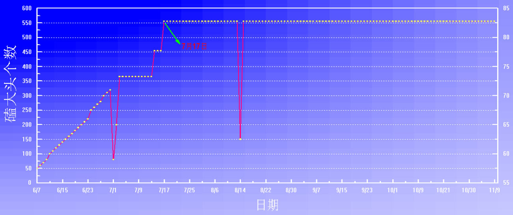
记得当时，群里还没有人报课，自然也没人磕大头这门课了——只有我一个人都在群里报(报课记录如下图中的箭头所示)，呵呵！现在回想起来，那个时候真是寂寞。当时，群里的《坐禅》与《坐禅之问答录》两本书还没有整理出来，Tai机器人更是连鬼影子都没有。
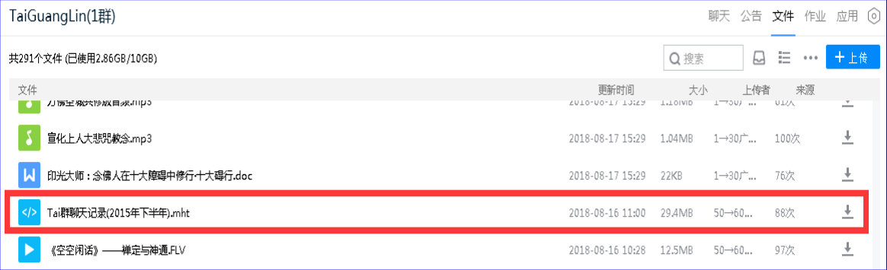
五、心理篇
没有执行力，再好的计划都是扯淡！当每天磕大头数量越来越多时，特别是每天都是555个时，站在垫子旁，说心里话，真心不想磕。顺便提一下，因为工作，白天也没时间磕大头，因此，为了保证每天磕大头，我把时间尽量的定在清晨4-5点之间(这也是不得已而为之)。这样，磕完大头，洗个澡，神清气爽的去上班，很是惬意(Tai师父开示过：清晨不适合磕大头)。
回到正题，为了解决那一刻不想磕的问题，我采取的办法就是(内心自我对话)：我先开始磕，然后再想想要不要磕。呵呵，这个方法似乎有点自相矛盾吧？！不过，它确实有效啊。正常的逻辑是：先想想要不要磕，然后决定是否磕。如果按照这个正常的逻辑来做，呵呵，很多时候，人们是不会去磕的。思考过多，有时候会阻碍行动的。所以，在快要犹豫的一刹那，给自我一个暗示：先做后想。
六、分析篇
在第三节的计划篇中，我提到了10个监控指标，接下来，我们就讨论一下其中的几个指标。
1、心率、腰围、体重、BMI指数和总脂肪率
首先，我们看看心率、腰围、体重、BMI指数和总脂肪率(很可惜，6月7日磕大头前没有测量这些指标)。
| 指标 | 单位 | 日期 | |||
|---|---|---|---|---|---|
| 7 月14 日 | 8 月23 日 | 9 月27 日 | 10 月23 日 | ||
| 心率 | 次/分钟 | 68 | 59 | 58 | 58 |
| 腰围 | 厘米 | 83 | 82 | 81 | 79 |
| 体重 | 公斤 | 62.4 | 60.5 | 59 | 58.8 |
| BMI 指数 | 22.1 | 21.4 | 20.9 | 20.8 | |
| 总脂肪率 | 17 | 15 | 16.5 | 16 |
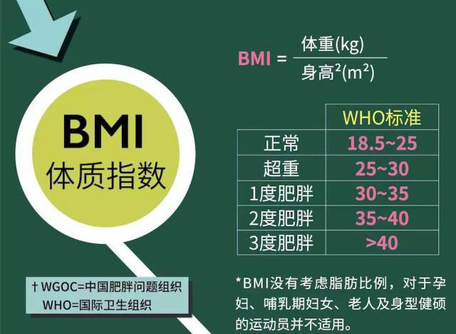
由上表中可以看出，从7月14日至10月23日，心率略有下降；腰围变化最明显，变细了4厘米，幅度不小哦。
体重也由125斤降低到117斤，现在还记得11月份的时候，我也称过体重，但没写在纸上，应该是116斤——也就是说，磕大头磕到一定程度，你的体重停留在某一个数值而不再有明显的变化。
BMI指数也从22.1变到20.8，参考上图中的WHO标准，我属于正常。呵呵
总脂肪率也由于磕大头的剧烈运动而燃烧而降低，但不明显，也许是因为我本身偏瘦，平常也不爱吃肉的原因造成。
2、每次磕大头所花费的时间
为了数据具有可对比性，我选取的是每次磕大头555个所花费的时间，从7月17日至11月9日，共计104天的数据。以日期为横坐标，花费的时间为纵坐标进行绘图(如下图所示)。
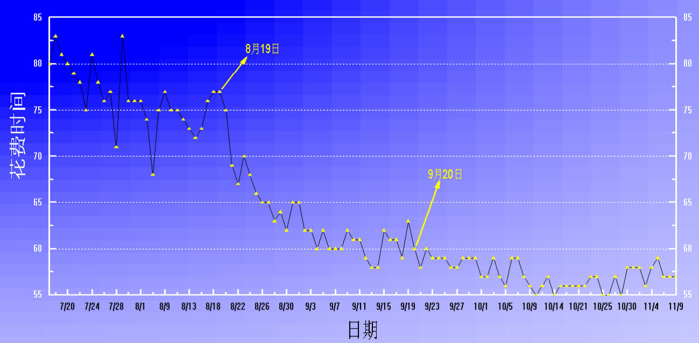
从上图可知，一开始(7月17日)，磕完555个大头，需要花费的时间不低于80分钟；随着每天坚持磕大头，身体随之也慢慢开始适应。
经过大约一个月左右的适应期(这段时间，磕大头所花费的时间起伏比较大)后，从8月19日开始至9月20日，花费时间开始快速减少——从77分钟减少到的60分钟。这意味着，虽然我每天磕大头还是555个，但是由于身体得到改善，变得更健康了，我花费的时间大幅度减少了。
从9月20日开始往后，磕大头花费时间的变化就越来越小了，全部都是在60分钟内完成——还有几次只花费55分钟就完成了。
刚开始的时候，那是慢的非常了。随着磕大头技巧的数量以及身体变得越来越好，我磕大头的速度也越来越快了。
另外，通过记录每次磕大头的起止时间，就能计算出每次花费的时间。然后依据这个时间，跟过去几天的进行比较，直接的能看出自己磕大头技巧是否更纯熟，也能间接的看出自己身体在过去几周的变化趋势。当你明了这个趋势，你内心就更有激情、更有信心了。
3、汗的气味
前面我提到过，磕大头需要准备一块纯棉毛巾。呵呵，这块纯棉毛巾可不只是用来接汗水这么简单哦！通过监测纯棉毛巾上汗水所散发出来的气味，我们能够看出更深层次、更有价值的信息——比体重、腰围等指标反应出来的信息更重要。
以我自己为例，每次磕下去，头总是会接触到泡沫垫子上的这块毛巾。一开始，每次磕完，前胸后背都是汗，把白色大背心全部湿透，大小腿也出汗。头上的汗也是不少，把毛巾都湿透了。毛巾上散发出很冲的汗味，但无明显的臭味。
但在磕大头到达3万个左右时后，这种情况开始发生巨大变化。被额头汗水所浸湿的毛巾（每次毛巾都会用肥皂洗干净晒干后再用的）所散发出的气味发生明显变化——变得非常腥臭！隔着一米远（室内，无风）都能被这味道恶心到——这应该就是磕大头的排毒表现。
如此持续了好长一段时间，大约是磕大头总数累积约6万个时，毛巾上的汗味又变了——腥臭味没有了，只剩下淡淡的咸味，盐得那种咸味——这种咸味并不令人反感，很奇怪吧！即便把毛巾凑到鼻孔边闻，也闻不到任何令人不舒服的臭味和汗味。
谈到这里，就需要讨论一个重要的问题——每次磕大头的个数。
群里也有不少人，可能女性更多一些吧，采取的是分组磕大头的方式——举例来说，每天的目标是磕324个大头，具体来做则是将324分成三组，每组108个，即每次磕108个，休息若干分钟，然后接着磕下一组。
具体这种分组怎么样，我没这么做过，不过，据我自己的体验，如果这个中间休息若干分钟超过5分钟，则变热的身体就会凉下来。而我在磕大头到达555个/天的时候，我还刻意注意到这点——每次磕到大约130个的时候，我身体才会开始出汗。也就是说，如果我分组磕，然后休息5分钟、10分钟，再磕下一组的108个。按这么个磕法，估计磕完555个，我不会出汗或者出汗很少。我当初磕的时候，555个是连续磕的，中间不停顿，因此汗也出得多，自然排毒效果和是很明显的——这点从毛巾的汗味可以得到证实。
所以，对于磕大头初学者，特别是身体不适太虚弱的中、青年男性修者，我个人给两条建议：
1)每次磕的量要够。最好每天500个——Tai师就是这么建议的！如果每次磕的数量不够——例如分组磕——基本上就不会出汗，身体内的毒素咋能通过磕大头排出去呢？
2)速度要快一点。这个速度因人而异，身体比较好一点的，就要尽可能的磕快一点，这样做也利于出汗与排毒。按Tai师说法就是：“年轻人求的是速度：13分钟做108个、65分钟做540个、105分钟864个”。
七、未完待续篇
严格来说，我当年磕的数量其实还是偏少的。但令人高兴的是，目前群里已经有不少人磕大头数量快接近10万这个数字，另外也有几个的这个数字超过了10万的，甚至有人正在向100万冲刺。在此处，我也期待有更多人把自己磕大头的体会写出来，分享给大家！最后祝各位家里的小朋友——六一儿童节快乐！
附录1：磕大头汇总
磕大头统计
| 日期 | 数量 | 分钟 |
|---|---|---|
| 6/7 | 50 | |
| 6/8 | 60 | |
| 6/9 | 70 | |
| 6/10 | 80 | |
| 6/11 | 100 | |
| 6/12 | 110 | |
| 6/13 | 120 | |
| 6/14 | 130 | |
| 6/15 | 140 | |
| 6/16 | 150 | |
| 6/17 | 160 | |
| 6/18 | 170 | |
| 6/19 | 180 | |
| 6/20 | 190 | |
| 6/21 | 200 | |
| 6/22 | 210 | |
| 6/23 | 220 | |
| 6/24 | 250 | |
| 6/25 | 260 | |
| 6/26 | 270 | |
| 6/27 | 280 | |
| 6/28 | 300 | |
| 6/29 | 310 | |
| 6/30 | 320 |
| 日期 | 数量 | 分钟 |
|---|---|---|
| 7/1 | 80 | |
| 7/2 | 200 | |
| 7/3 | 365 | 40 |
| 7/4 | 365 | 60 |
| 7/5 | 365 | 60 |
| 7/6 | 365 | 55 |
| 7/7 | 365 | |
| 7/8 | 365 | 60 |
| 7/9 | 365 | 60 |
| 7/10 | 365 | 56 |
| 7/11 | 365 | 58 |
| 7/12 | 365 | 56 |
| 7/13 | 365 | 56 |
| 7/14 | 455 | 72 |
| 7/15 | 455 | 70 |
| 7/16 | 455 | 67 |
| 7/17 | 555 | 80 |
| 7/18 | 555 | 83 |
| 7/19 | 555 | 81 |
| 7/20 | 555 | 80 |
| 7/21 | 555 | 79 |
| 7/22 | 555 | 78 |
| 7/23 | 555 | 75 |
| 7/24 | 555 | 81 |
| 7/25 | 555 | 78 |
| 7/26 | 555 | 76 |
| 7/27 | 555 | 77 |
| 7/28 | 555 | 71 |
| 7/29 | 555 | 83 |
| 7/30 | 555 | 76 |
| 7/31 | 555 | 76 |
| 日期 | 数量 | 分钟 |
|---|---|---|
| 8/1 | 555 | 76 |
| 8/2 | ||
| 8/3 | ||
| 8/4 | ||
| 8/5 | ||
| 8/6 | 555 | 74 |
| 8/7 | 555 | 68 |
| 8/8 | 555 | 75 |
| 8/9 | 555 | 77 |
| 8/10 | 555 | 75 |
| 8/11 | 555 | 75 |
| 8/12 | 555 | 74 |
| 8/13 | 555 | 73 |
| 8/14 | 150 | 20 |
| 8/15 | 555 | 72 |
| 8/16 | 555 | 73 |
| 8/17 | 555 | 76 |
| 8/18 | 555 | 77 |
| 8/19 | 555 | 77 |
| 8/20 | 555 | 75 |
| 8/21 | 555 | 69 |
| 8/22 | 555 | 67 |
| 8/23 | 555 | 70 |
| 8/24 | 555 | 68 |
| 8/25 | 555 | 66 |
| 8/26 | 555 | 65 |
| 8/27 | 555 | 65 |
| 8/28 | 555 | 63 |
| 8/29 | 555 | 64 |
| 8/30 | 555 | 62 |
| 8/31 | 555 | 65 |
| 日期 | 数量 | 分钟 |
|---|---|---|
| 9/1 | 555 | 65 |
| 9/2 | 555 | 62 |
| 9/3 | 555 | 62 |
| 9/4 | 555 | 60 |
| 9/5 | 555 | 62 |
| 9/6 | 555 | 60 |
| 9/7 | 555 | 60 |
| 9/8 | 555 | 60 |
| 9/9 | 555 | 62 |
| 9/10 | 555 | 61 |
| 9/11 | 555 | 61 |
| 9/12 | 555 | 59 |
| 9/13 | 555 | 58 |
| 9/14 | 555 | 58 |
| 9/15 | 555 | 62 |
| 9/16 | 555 | 61 |
| 9/17 | 555 | 61 |
| 9/18 | 555 | 59 |
| 9/19 | 555 | 63 |
| 9/20 | 555 | 60 |
| 9/21 | 555 | 58 |
| 9/22 | 555 | 60 |
| 9/23 | 555 | 59 |
| 9/24 | 555 | 59 |
| 9/25 | 555 | 59 |
| 9/26 | 555 | 58 |
| 9/27 | 555 | 58 |
| 9/28 | 555 | 59 |
| 9/29 | 555 | 59 |
| 9/30 | 555 | 59 |
| 日期 | 数量 | 分钟 |
|---|---|---|
| 10/1 | 555 | 57 |
| 10/2 | 555 | 57 |
| 10/3 | 555 | 59 |
| 10/4 | 555 | 57 |
| 10/5 | 555 | 56 |
| 10/6 | 555 | 59 |
| 10/7 | 555 | 59 |
| 10/8 | 555 | 57 |
| 10/9 | 555 | 56 |
| 10/10 | ||
| 10/11 | 555 | 55 |
| 10/12 | 555 | 56 |
| 10/13 | 555 | 57 |
| 10/14 | 555 | 55 |
| 10/15 | ||
| 10/16 | ||
| 10/17 | ||
| 10/18 | 555 | 56 |
| 10/19 | 555 | 56 |
| 10/20 | 555 | 56 |
| 10/21 | 555 | 56 |
| 10/22 | 555 | 56 |
| 10/23 | 555 | 57 |
| 10/24 | 555 | 57 |
| 10/25 | 555 | 55 |
| 10/26 | 555 | 55 |
| 10/27 | 555 | 57 |
| 10/28 | ||
| 10/29 | 555 | 55 |
| 10/30 | 555 | 58 |
| 10/31 | 555 | 58 |
| 日期 | 数量 | 分钟 |
|---|---|---|
| 11/1 | 555 | 58 |
| 11/2 | 555 | 56 |
| 11/3 | ||
| 11/4 | 555 | 58 |
| 11/5 | 555 | 59 |
| 11/6 | ||
| 11/7 | 555 | 57 |
| 11/8 | 555 | 57 |
| 11/9 | 555 | 57 |
注：本表格中的数据来源于附录2。
附录2：磕大头每月修行计划
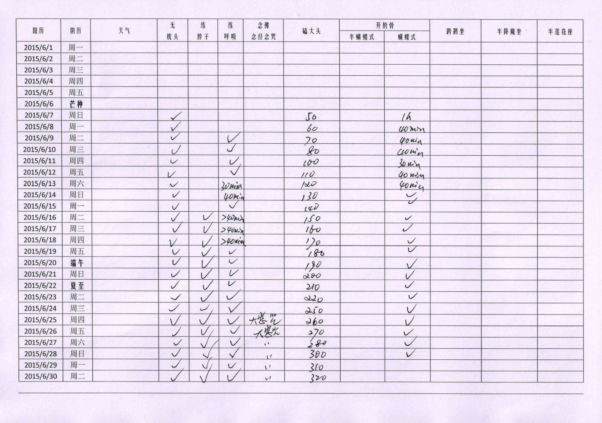
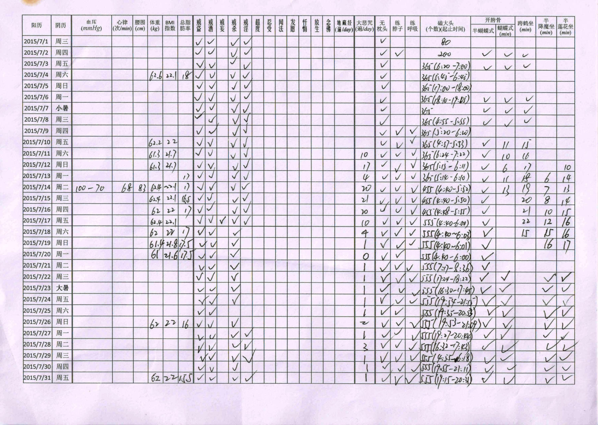
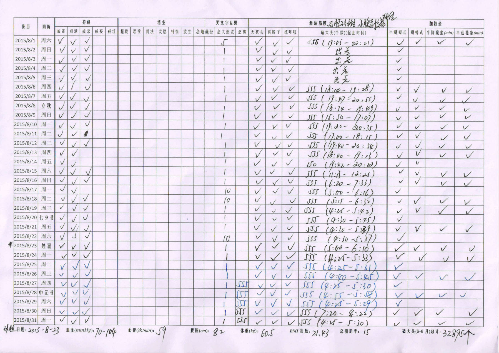
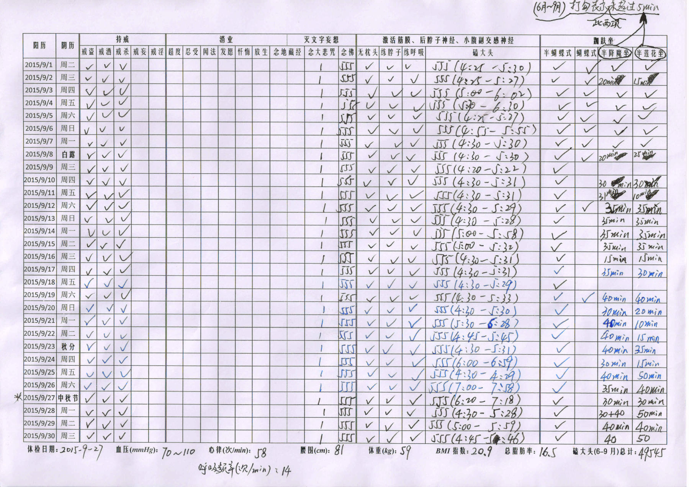
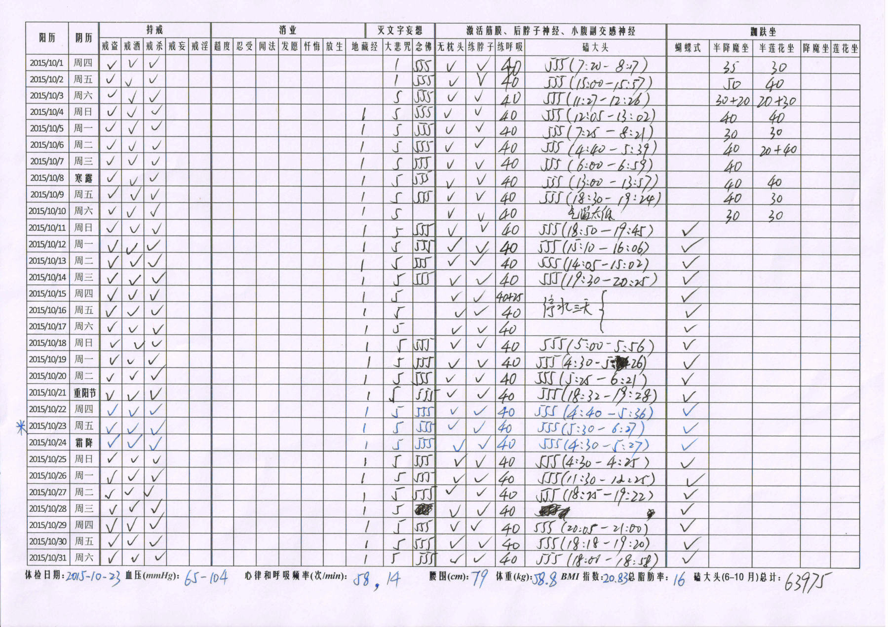
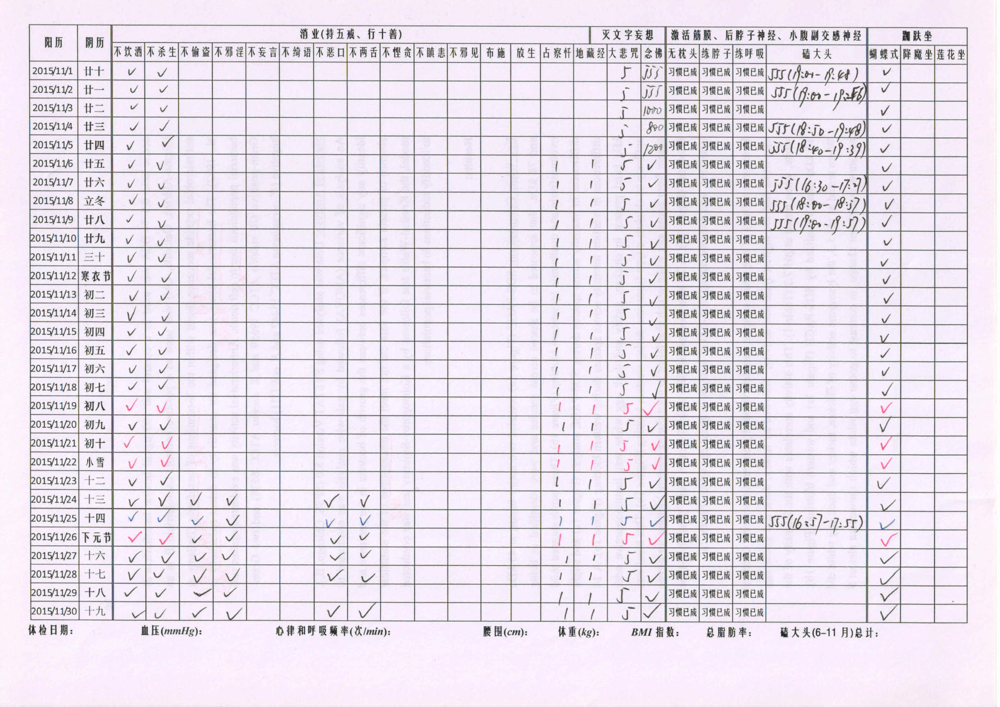